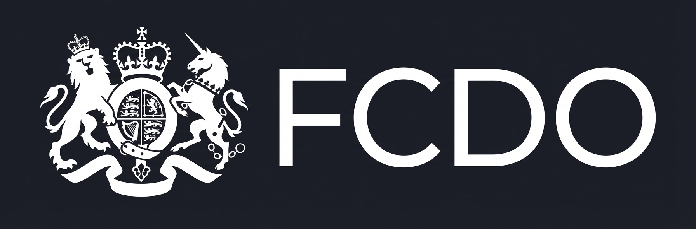
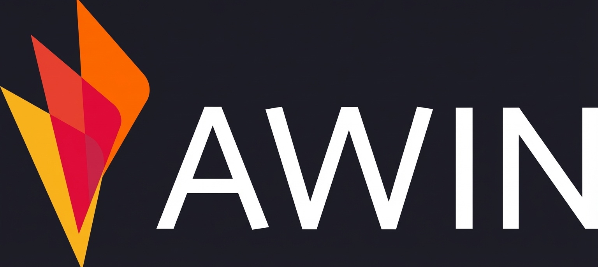
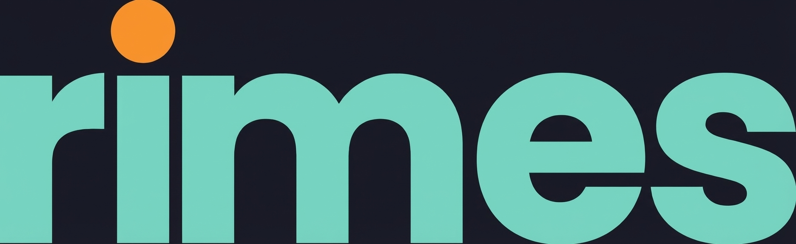

The UK Government's first public-facing LLM-powered service
Live on GOV.UK and on every British Embassy website. Turned a 10-day
email queue into a 5-second response, at 95% accuracy in production -
exceeding the human agent baseline. Saving £3.6M over 5 years
while serving 500,000+ citizens annually.
Winner · Digital Leaders AI Award 2025 · Featured on AI.gov.uk
LLM architecture
Hallucination-safe design
Production deployment
Delivered with CYB
Delivered while freelancing through Caution Your Blast (CYB); the
Digital Leaders AI Award 2025 was won with the CYB team.
See the award.
70% adoption in 12 weeks
From zero usage to 70% adoption across the charity in 12 weeks. Strategy
through to coaching, building sustainable capability across the whole
organisation.
AI transformation
Training

11 ICBs, one diagnostics discovery
AI and automation discovery across 11 Integrated Care Boards in the
NHS Midlands region. Workshops narrowed 41 opportunities to a
prioritised shortlist, modelling how a 1% cut in missed appointments
could release a pathway to roughly 90,000 diagnostic appointments a
year. The programme secured funding for pilot projects and reached a
working prototype within weeks. Delivered via Hudson & Hayes.
Discovery
Business case

10 Days → 2 Hours
Built publisher matching system processing 1,500 vendors in 2 hours -
down from 10 days. Cut RFP response time by 50%.
Rapid prototyping
Automation
A single front door
AI strategy and platform architecture for the FTSE 100 education
company. We designed a unified single-front-door platform concept - an
AI-agent and MCP-based architecture to connect fragmented
learning-delivery systems into one coherent learner experience,
including a working agentic prototype. The relationship has continued
into a broader programme supporting Pearson's early-careers ambitions,
including the national challenge of young people not in education,
employment or training (NEET).
Platform architecture
MCP framework

A roadmap and the tooling to use it
AI transformation roadmap for a private-equity-backed financial-data
firm targeting 3x growth. We designed an MCP-based approach to make
legacy systems AI-accessible, and rolled out a developer-tooling
programme across a ~50-strong engineering team, with onboarding and
process-design workshops. Delivered via Hudson & Hayes.
Roadmap
Developer enablement